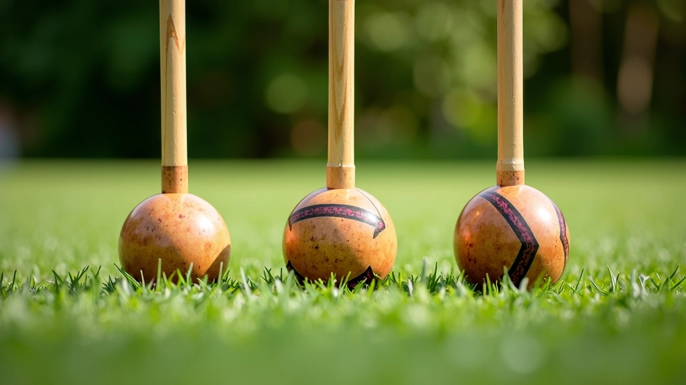
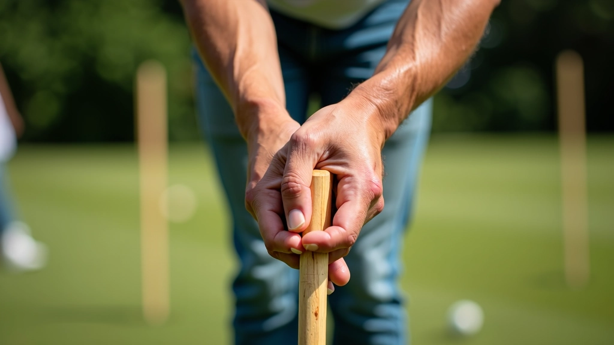
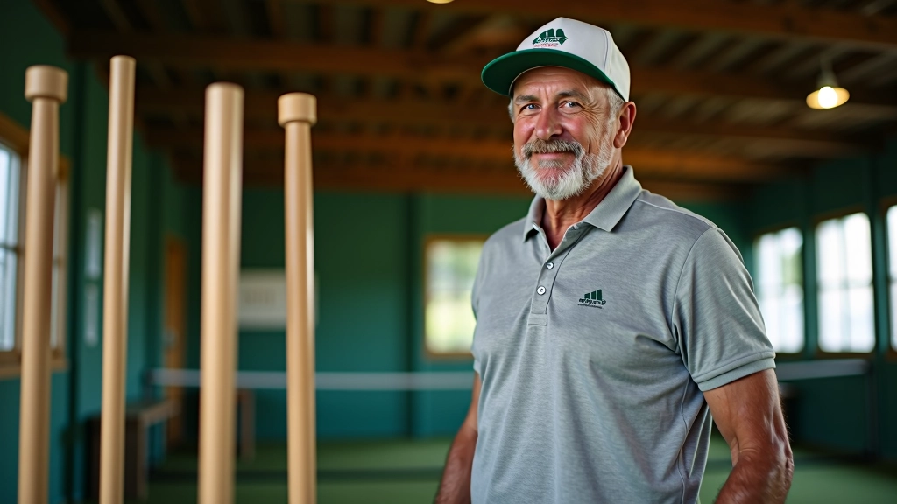

أوزان مطارق الكروكيه: ما الفرق الفعلي؟
شرح تفصيلي لأوزان المطارق المختلفة من 680 إلى 1000 جرام وتأثير كل منها على قوتك ودقتك في اللعب.
نصائح عملية لاختيار الوزن المناسب بناءً على قوتك البدنية والمسافات التي تريد تحقيقها في اللعب

عندما تبدأ بلعبة الكروكيه، أول سؤال يخطر ببالك هو: أي مطرقة أختار؟ الحقيقة أن هذا الاختيار ليس بسيط كما قد يبدو. وزن المطرقة يؤثر بشكل مباشر على قوتك، دقتك، وحتى متعتك باللعبة. اختيار الوزن الخاطئ يعني أنك ستتعب بسرعة، أو لن تتمكن من الوصول للمسافات المطلوبة، أو قد تؤذي معصمك.
المطرقة الخفيفة جداً تعطيك تحكماً أفضل لكن قوة أقل. والمطرقة الثقيلة تعطيك قوة أكثر لكن تحتاج لجهد أكبر وقد تسبب إرهاقاً. الهدف هو إيجاد التوازن المناسب لقوتك الشخصية.
معظم المطارق تتراوح أوزانها بين 680 إلى 1000 جرام. الاختيار بينها يعتمد على قوتك الجسدية وخبرتك.
ننصح بتقسيم اللاعبين إلى ثلاث فئات من حيث القوة البدنية. كل فئة لها احتياجات مختلفة:
إذا كنت في البدايات أو طفلاً صغيراً، تريد مطرقة خفيفة. وزن 680 إلى 750 جرام يعطيك التحكم الكامل. لن تشعر بإرهاق حتى بعد ساعة كاملة من اللعب. المشكلة الوحيدة هي أنك قد لا تستطيع الوصول للمسافات الطويلة بسهولة. لكن هذا تمام التمام في البدايات — التحكم أهم من القوة.
هذا هو الوزن الأمثل لمعظم اللاعبين. 800 إلى 900 جرام يوفر توازناً رائعاً بين التحكم والقوة. تستطيع الوصول للمسافات المعقولة دون إرهاق. هذا الوزن يناسب الشباب والبالغين الذين يمارسون النشاط البدني بشكل منتظم. نحن نرى أن معظم اللاعبين يبدؤون من هنا بعد أسابيع قليلة من التدريب.
إذا كنت رياضياً قوياً أو تمارس تدريباً منتظماً، المطرقة الثقيلة لك. 900 إلى 1000 جرام تعطيك قوة حقيقية. تستطيع الوصول لأبعد مسافات، وضرباتك تكون أقوى بكثير. المشكلة أن معصمك سيحتاج لتقوية، والتعب يأتي أسرع إذا لم تكن قوياً بما يكفي.

لا تحكم على المطرقة من المظهر فقط. احملها بيدك واشعر بالوزن الحقيقي. هل تشعر أنها ثقيلة على معصمك؟ هل تستطيع رفعها بسهولة وتحريكها للأمام والخلف؟ هذا هو الاختبار الحقيقي الأول.
الوزن وحده ليس كل شيء. تحتاج لضرب الكرة فعلياً. جرب ضربة عادية وشعر كيف تتحرك المطرقة. هل تشعر بالتحكم الكامل؟ هل تشعر أن الضربة قوية؟ في أول 30 ثانية ستعرف إن كانت هذه المطرقة مناسبة لك.
جرب ضربة بقوة متوسطة وشوف الكرة وصلت لأي مسافة. هل تصل لـ 5 أمتار بسهولة؟ أم تحتاج لقوة أكبر؟ تذكر أنك في البداية لن تصل لأقصى مسافة، لكن يجب أن تشعر أن المطرقة قادرة على إرسال الكرة لمسافة معقولة.
هل المقبض مريح في يدك؟ هل تستطيع الإمساك به بثبات؟ بعض المطارق لها مقابض سميكة وبعضها رفيع. هذا مهم جداً. المطرقة الثقيلة مع مقبض رفيع قد تؤدي لإصابة معصمك. اختر مطرقة مريحة أولاً.

تعرف أكثر على معدات الكروكيه واختيار الأدوات المناسبة
شرح تفصيلي لأوزان المطارق المختلفة من 680 إلى 1000 جرام وتأثير كل منها على قوتك ودقتك في اللعب.

مقارنة شاملة بين المقابض الخشبية التقليدية والمقابض المركبة الحديثة ومميزات كل منها.

إرشادات عملية لصيانة مطرقتك بشكل صحيح وإطالة عمرها والحفاظ على أدائها لسنوات طويلة.
بعد بضعة أشهر من اللعب، قد تجد نفسك تريد أكثر من مطرقة واحدة. هذا طبيعي تماماً. اللاعبون المحترفون يملكون 2 أو 3 مطارق مختلفة الأوزان. لماذا؟ لأن أنواع اللعب المختلفة تحتاج لأدوات مختلفة.
على سبيل المثال، عندما تلعب على ملعب سريع بعشب قصير، تريد مطرقة أخف قليلاً للتحكم. وعندما تلعب على ملعب أبطأ بعشب أطول، قد تريد مطرقة أثقل قليلاً للقوة. هذا مثل اللاعبين في كرة الريشة — لديهم مضربات مختلفة لأنواع لعب مختلفة.
لكن لا تقلق — في البداية، مطرقة واحدة جيدة تماماً. ركز على تحسين مهاراتك أولاً. بعد ستة أشهر أو سنة، إذا أحببت اللعبة حقاً، يمكنك البحث عن مطرقة ثانية.


فريق التحرير
كتبه فريق ملاعب الدقي التحريري، مكرس لتقديم إرشادات عملية وسهلة المتابعة عن رياضة الكروكيه. نحن نؤمن أن أفضل طريقة للتعلم هي من خلال النصائح الواقعية والتجارب الفعلية.
اختيار المطرقة المناسبة هو أول خطوة نحو لعبة كروكيه ممتعة وآمنة. لا تتسرع في هذا القرار. احمل المطرقة، اشعر بوزنها، جرب ضربة أو اثنتين. اسأل المدرب أو الخبراء في المكان عن رأيهم. الوزن الذي تشعر معه بالراحة والتحكم هو الوزن الصحيح لك.
تذكر أن القوة تأتي مع الممارسة. حتى لو اخترت مطرقة خفيفة في البداية، بعد أسابيع من التدريب ستشعر أنك أقوى وقد تريد مطرقة أثقل قليلاً. هذا تطور طبيعي تماماً. والأهم من كل هذا — استمتع باللعبة واستمر في التدريب.
هذا المقال يقدم معلومات تعليمية عامة حول اختيار مطارق الكروكيه. الإرشادات المقدمة هنا مبنية على خبرات عملية ومعرفة عامة بالرياضة. كل شخص له احتياجات جسدية مختلفة، لذا ننصح بالتشاور مع مدرب متخصص أو خبير محلي قبل اتخاذ قرار نهائي. الظروف الشخصية والصحية قد تؤثر على الاختيار المناسب لك. استشر متخصصاً إذا كان لديك أي شكوك.